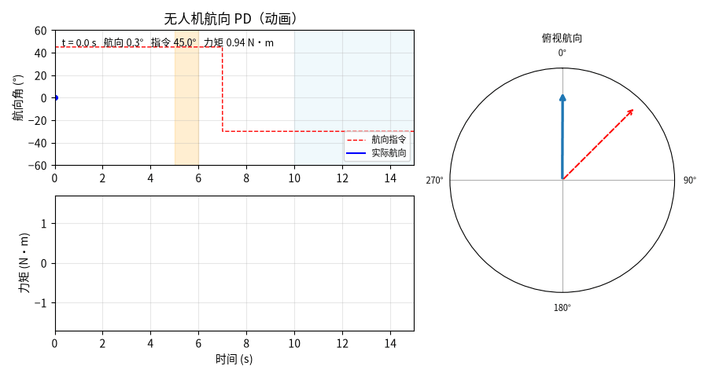

基于 PD 的无人机航向角稳定控制与阶跃转向仿真
本文介绍一个不需要 PX4 / Gazebo / AirSim 的无人机航向控制复现模块。模块用偏航单轴刚体模型作被控对象，航向指令由 +45° 阶跃到 −30°，中间叠加一次 1 s 阵风力矩与持续往复风扰；控制器为 PD（微分作用在角速率上，误差按最短弧回绕，力矩限幅）。运行一次即可得到航向曲线、力矩曲线、俯视罗盘动图与指标 JSON，全部数值由代码算出。
本文档承接仓库中「无人机姿态控制」相关实验的偏航通道部分，把它搬到纯 Python、纯 CPU 的离线环境上复现。
与 PX4 / Gazebo / AirSim 的关系：本模块的被控对象是「控制力矩 / 转动惯量 + 风扰力矩」的单轴刚体，不含桨叶气动阻尼、电机与电调延迟、姿态环串级结构、四元数与欧拉角的完整耦合。它能复现「PD 能锁住航向、被阵风顶偏后能拉回」这一趋势，但不等价于飞控在环仿真，具体差异见第 7 节。
1. 运行环境
| 项目 | 版本 / 说明 |
|---|---|
| 操作系统 | Ubuntu 22.04.5 LTS（纯 CPU 运行，不依赖 GPU） |
| Python | 3.12.11 |
| 依赖 | numpy>=1.21（实测 1.26.4）、matplotlib>=3.5（实测 3.11.0）、Pillow>=9.0（实测 10.4.0，仅用于导出 GIF） |
| 是否需要 ROS / PX4 / Gazebo / AirSim | 不需要 |
requirements.txt 已写明上述下限；测试与出图只在当前环境验证过，没有在其他发行版或 Python 版本上验证。
2. 实验原理
2.1 被控对象
偏航单轴刚体，转动惯量 Izz = 0.02 kg·m²，状态为航向角 yaw 与偏航角速率 rate：
accel = (torque + disturbance) / Izz # 风扰直接以力矩形式叠加
rate += accel * dt
yaw = wrap_pi(yaw + rate * dt) # 航向角回绕到 [-π, π]
航向角必须回绕：第二段指令为 −30°，若在第一段把角度累积到 +45° 后直接线性相减，误差会出现 75° 的正负跳变；回绕到 [−π, π] 并按最短弧求差，才能保证第二段转向走的是 75° 而不是 285°。
2.2 控制器
航向 PD，采样周期 dt = 0.01 s：
| 参数 | 取值 | 说明 |
|---|---|---|
kp |
1.2 | 比例：每 1 rad 航向误差给 1.2 N·m |
kd |
0.35 | 微分：按角速率阻尼（作用在测量上） |
torque_limit |
1.5 | 力矩限幅，对应偏航通道可用力矩上限 |
按二阶模型折算：自然频率 ωn = sqrt(kp / Izz) ≈ 7.7 rad/s，阻尼比 ζ = kd / (2·sqrt(kp·Izz)) ≈ 0.97，接近临界阻尼，因此阶跃超调极小。
微分项作用在角速率上（−kd·rate）而不是误差上：航向指令两段都是阶跃，对误差求导会在 t=7 s 处产生一次性微分冲击，把力矩瞬间推到限幅，动画里表现为一根与实际执行器不符的力矩尖峰。
2.3 航向指令与扰动
| 时间区间 | 航向指令 | 用途 |
|---|---|---|
0 ≤ t < 7 s |
+45° | 首段阶跃转向（右转 45°），量上升时间、超调与稳态误差 |
t ≥ 7 s |
−30° | 第二段阶跃转向（左转 75°），量稳定时间 |
| 扰动 | 时间区间 | 幅值 | 物理含义 |
|---|---|---|---|
| 阵风力矩 | 5–6 s | 0.06 N·m | 侧风突加，把机头往一侧推 |
| 往复风扰 | t > 10 s |
0.02 N·m，0.8 Hz | 阵风后的持续湍流 |
扰动幅值取 0.06 / 0.02 N·m 而不是 0.5 / 0.2 N·m：Izz = 0.02 时 0.5 N·m 相当于 25 rad/s² 的角加速度，持续 1 s 会把航向推偏 50° 以上，那不是「阵风」而是「失控」，观测不到稳定的抗扰行为。
2.4 指标口径
所有指标按窗口计算，阶跃指标避开风扰窗口：
| 指标 | 定义 | 取值窗口 |
|---|---|---|
| 上升时间 | 10% → 90% 幅值的耗时 | 0–5 s（0 → +45° 段） |
| 首段超调 | 窗口内 航向最大值 − 45° |
0–5 s |
| 首段稳态误差 | \|指令 − 航向\| 在窗口内的均值 |
4.0–4.9 s（阵风前） |
| 阵风峰值偏差 | 窗口内 \|指令 − 航向\| 的最大值 |
5–6 s |
| 阵风后残差 | 窗口内 \|指令 − 航向\| 的最大值 |
6.9–7.0 s |
| 阵风恢复时间 | 阵风结束后首次回到 ±0.5° 带的耗时 | 6 s 起 |
| 二段稳定时间 | 进入 ±0.5° 带并在风扰开始前保持的耗时 | 7–10 s |
| 往复风扰最大偏差 | \|指令 − 航向\| 的最大值 |
12–15 s |
风扰窗口从 10 s 起，而第二段阶跃发生在 7 s，因此「二段稳定时间」必须在 10 s 之前判定；若把窗口拉到 15 s，往复风扰本身就会把误差推出 ±0.5° 带，稳定时间会永远判不出来。
3. 代码结构
完整源码位于 src/air/uav_yaw_stabilize，唯一的实现文件是 scripts/uav_yaw_stabilize.py，main.py 只是把它转发执行：
| 代码段 | 作用 |
|---|---|
wrap_pi() |
角度回绕到 [−π, π] |
UAVYawPlant |
偏航单轴刚体，step() 推进航向角与角速率 |
PDYawController |
航向 PD，微分在测量上，力矩限幅 |
yaw_profile() / wind_torque() |
两段航向阶跃指令、阵风与往复风扰 |
simulate() |
闭环仿真，返回时间、航向、指令、力矩、角速率 |
rise_time() / recovery_time() / settle_time() / evaluate() |
指标计算（按窗口分离） |
plot_static() |
静态双面板图 yaw_response.png |
plot_gif() |
逐帧动图 yaw_demo.gif（曲线 + 力矩 + 俯视罗盘，60 帧、10 fps） |
main() |
命令行入口，写 PNG / GIF / summary.json |
下面只解释两处关键实现，完整代码请直接查看 src/ 下的源码。
（1）最短弧误差与限幅
err = wrap_pi(yaw_target - yaw_meas) # 最短弧，避免 ±180° 处跳变
u = self.kp * err - self.kd * yaw_rate_meas
return float(np.clip(u, -self.torque_limit, self.torque_limit))
（2）第二段稳定时间的判据
for k in idx: # 首次进入 ±0.5° 带
if np.all(err[k:][times[k:] < until] <= band_deg): # 且在 until 之前一直保持
return float(times[k] - since)
until 取 10 s（风扰起点）。不设这个上界时，10 s 之后的往复风扰会把误差重新推出 ±0.5° 带，「此后一直在带内」的条件永远不成立，稳定时间会返回 None。
4. 运行步骤
cd src/air/uav_yaw_stabilize
pip install -r requirements.txt
python main.py
可选参数：--out-dir 指定输出目录（默认 results）、--dt 指定仿真步长（默认 0.01 s）、--t-end 指定仿真时长（默认 15 s）。
跑测试：
cd src/air/uav_yaw_stabilize
python -m pytest tests -v
本地跑不通时的排查顺序：
- 报
ModuleNotFoundError: matplotlib或PIL——依赖没装全，pip install -r requirements.txt；只装 numpy 会在保存动图时失败。 - 报输出目录不可写——用
--out-dir指到一个可写目录。 - 第二段稳定时间显示
nan——说明 7–10 s 内没进入 ±0.5° 带，多半是增益被改小或torque_limit被调低。 - 航向曲线在 ±180° 附近出现竖直跳变——回绕逻辑被去掉或写错了，检查
wrap_pi()是否正确用于求差。
运行结束后 results/ 目录得到：
yaw_response.png：上图为航向角曲线（含指令与两段风扰阴影），下图为控制力矩曲线yaw_demo.gif：逐帧动画，左上航向曲线、左下力矩曲线、右侧俯视罗盘（虚线为目标航向、实线为实际航向）summary.json：第 2.4 节全部指标的数值
终端同时打印各项指标。
5. 运行效果
航向稳定动图（左上航向曲线、左下力矩、右侧俯视罗盘；橙色为阵风、浅蓝为往复风扰）：

实测指标（summary.json）：
| 指标 | 实测值 |
|---|---|
| 0→45° 上升时间 | 0.53 s |
| 首段超调（0–5 s） | 0.000° |
| 首段稳态误差（4.0–4.9 s） | 0.000° |
| 阵风峰值偏差（5–6 s） | 2.817° |
| 阵风后残差（6.9–7.0 s） | 0.068° |
| 阵风恢复时间（±0.5° 带） | 0.46 s |
| 二段阶跃（+45°→−30°）稳定时间 | 1.19 s |
| 往复风扰最大偏差（12–15 s） | 0.601° |
| 末航向（指令 −30.0°） | −30.55° |
| 最大力矩 | 1.50 N·m（顶到限幅） |
从动图与表中可以看到：
- 阶跃几乎没有超调：0.53 s 走完 10%→90%，超调 0.000°，这是
ζ ≈ 0.97的临界阻尼特性，代价是响应比高增益方案慢一档。 - 力矩在第一段阶跃起始处顶到 1.5 N·m 限幅：45° 误差 ×
kp = 1.2已超过限幅，起始段工作在饱和区；这也说明上升时间由力矩上限与转动惯量共同决定，而不只由kp决定。 - 阵风把航向顶偏 2.8°，0.46 s 后拉回：0.06 N·m 的阵风持续 1 s，期间由
kd提供的阻尼项抵抗角速率，阵风结束后误差迅速收敛到 0.068°。 - 第二段 75° 转向用 1.19 s 稳定：转向幅度更大，但起始速度已归零、误差一直在缩短，实际用时只比首段多一倍。
- 往复风扰下偏差 0.601°：0.8 Hz 风扰已接近闭环带宽（约 1.2 Hz），控制器只能压到 0.6° 量级，末航向因此停在 −30.55° 而不是 −30.00°。
6. 分析与结论
- PD 在这个通道上够用，前提是微分作用在测量上：航向指令全是阶跃，误差微分会把 t=7 s 的 75° 跳变变成一次力矩暴冲；改成
−kd·rate后，两段阶跃的力矩都是连续爬升到限幅，曲线与真实电机的力矩响应更接近。 - 超调为 0 的代价在响应速度上：
ζ ≈ 0.97对应 0.53 s 的上升时间。把kd降到 0.2（ζ ≈ 0.65）实测上升时间压到 0.26 s，但首段超调升到 2.8°，二段稳定时间 0.83 s——这是一对显式的取舍。 - 限幅决定了「能扛多大的风」：起始段力矩顶在 1.5 N·m，说明可用力矩是硬约束；阵风 0.06 N·m 相对限幅很小，所以只被顶偏 2.8°，若阵风提到 0.2 N·m 就会明显顶不住。
- 第二段稳定时间必须限定在风扰之前判定：0.8 Hz 往复风扰的幅值本身就超过 ±0.5° 带，若不设 10 s 上界，这个指标永远算不出来——这是指标口径设计上的一个坑，已在第 2.4 节写明。
- 本组参数对
Izz敏感：Izz从 0.02 变到 0.05，同样的kp、kd会变成过阻尼、响应明显变慢；换机型必须重标。
7. 边界与局限
- 偏航单轴刚体，不是六自由度姿态模型：不含横滚/俯仰耦合、桨叶气动阻尼、电机与电调延迟、飞控内环串级结构与滤波器相位滞后。航向结论只覆盖「单轴、无耦合」的理想情形。
- 扰动是两种理想波形：一段常值阵风力矩 + 一段单频正弦湍流。没有做随机湍流、变幅阵风与同时发生的多轴扰动。
- 没有传感器与执行器非理想性：航向角与角速率由模型直接给出，没有 IMU 噪声、零偏、量测延迟；真实飞控可用增益区间会比这里窄。
- 指标窗口手工划定：稳态误差取 4.0–4.9 s、二段稳定时间限定在 7–10 s，均按本实验的扰动时刻排布；改扰动时间必须同步改窗口，否则窗口落空会得到
nan。 - 只验证两个航向点：+45° 与 −30° 两段阶跃，没有做连续航向跟踪（斜坡指令）与航向角速率指令跟踪。
本节源码位于 src/air/uav_yaw_stabilize，采集流程与指标口径与本文档一致，依赖与运行方式见该目录的 README。